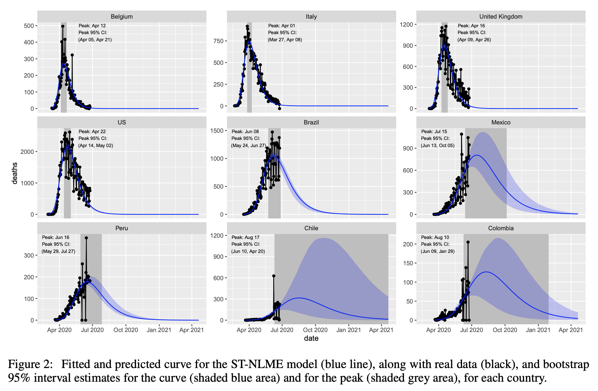

How to model Covid-19 data?
The analysis of longitudinal data such as COVID-19 infections or deaths is challenging. Similarly-shaped profiles with different decay patterns, unexplained variation among repeated measurements within each country and its Skewness make this task even more complicated. We will see in this post, two methods to carry out relevant modeling for the Covid-19 data provided by the Johns-Hopkins University.
A SIR(D) Approach
We first propose a SIRD-type (Susceptible, Infectious, Recovered and Deceased) model. Given the high variability among the different countries reported in the database, the model integrates a time-dependent transmission rate, whose variations can be thought to be related to the health measures taken by the country in question. This model focuses on the “first wave” in sevral European countries, from March to June 2020.
Even if the proposed model adjusts the data very well, it is important to stress that such a model does not claim to be able to predict the evolution of the epidemic in each country. It merely proposes a possible scenario in the relatively short term, assuming a certain stability of conditions.
The notorious reproduction number, noted R, used by governments to measure the spread of the virus, is expressed as R = β(t)/(μ + ν), representing the expected number of secondary infections from a single infected individual.
Further details, including how to fit such model to the observations, are given in http://webpopix.org/covidix19.html.
A Nonlinear Mixed Modeling Approach
Given the interindividual variability within each country's population, another approach consists in using nonlinear mixed-effects model. A fixed population parameter describe the average behaviour of the population (what makes us all equal), while a random effects, latent, i.e. unobserved, and assumed randomly distributed (Normal or Log Normal distribution in the simplest cases) describes the unobserved interindividual variability among the individuals of the same population.
Here, scale mixtures of skew-normal distributions are used for modeling COVID-19 deaths only. An efficient EM-type algorithm is proposed to learn the model parameters. The bootstrap method is used to determine inherent characteristics of the nonlinear individual profiles such as confidence interval of the predicted deaths and fitted curves.
Further details are given in the article "A Robust Nonlinear Mixed-effects model for COVID-19 Deaths Data" via https://arxiv.org/pdf/2007.00848.pdf.
